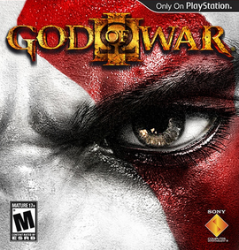

God of War é uma série de jogos eletrônicos de ação-aventura criada por David Jaffe da Santa Monica Studio, da Sony. Iniciada em 2005 no console PlayStation 2 (PS2), tornou-se carro-chefe para a marca PlayStation, consistindo em nove jogos em várias plataformas. Baseada em distintas mitologias, a história segue Kratos, um guerreiro espartano que foi levado a matar sua família por seu antigo mestre, o deus da guerra Ares. Isso desencadeia uma série de eventos que levam às guerras com os panteões mitológicos. A era da mitologia grega da série mostra Kratos seguindo um caminho de vingança devido às maquinações dos deuses do Olimpo.
God of War I
Sinopse da História: Baseado vagamente na mitologia grega, o jogo se passa na Grécia Antiga, com vingança como seu tema central.
O protagonista é Kratos, um guerreiro espartano que se torna o Deus da Guerra e entra em conflito com vários panteões mitológicos.
Kratos é encarregado pela deusa Atena de matar Ares, o Deus da Guerra e antigo mentor de Kratos, que o enganou ao fazê-lo matar sua esposa e filha.
Personagens: Kratos, Athena, Ares, Oráculo da Vila, Oráculo de Athenas, Coveiro, Pathos Verdes III, Lisandra e Calíope.
Armas: Lâminas do Caos, Lâmina de Ártemis, Lâmina de Athena
Magias: Fúria de Poseidon, Olhar de Medusa, Fúria de Zeus, Exército de Hades.
Data de Lançamento: 22 de Março de 2005.
God of War II
Sinopse da História: Continuação direta do primeiro jogo.
Kratos busca vingança contra os deuses do Olimpo, especialmente Zeus.
Ele embarca em uma jornada para encontrar a Lâmina de Ômega e desafiar os deuses diretamente.
A trama envolve traições, batalhas épicas e a busca por poder divino.
Personagens: Kratos, Athena, Gaia, Último Espartano, Láquesis, Átropos, Cloto, Zeus.
Armas: Lâminas de Athena, Martelo Bárbaro, Lança do Destino, Lâmina do Olimpo.
Magias: Fúria de Poseidon, Desgraça de Tifão, Cabeça de Euríale, Tremos de Atlas.
Data de lançamento: 13 de março de 2007.

God of War III
Sinopse da História: O terceiro jogo da trilogia original.
Kratos continua sua busca por vingança contra os deuses do Olimpo, especialmente Zeus.
A batalha final entre Kratos e Zeus é o clímax do jogo, com consequências devastadoras para o mundo dos deuses.
Armas: Lâminas de Athena, Lâminas do Exílio, Garras de Hades, Manoplas de Nemeia, Chicote de Nêmesis.
Magias: Cômputo Divino (Lâminas de Atena), Exército de Esparta (Lâminas do Exílio), Invocação de Almas (Garras de Hades), Rugido de Nemeia (Manoplas de Nemeia), Fúria de Nêmesis (Chicote de Nêmesis).